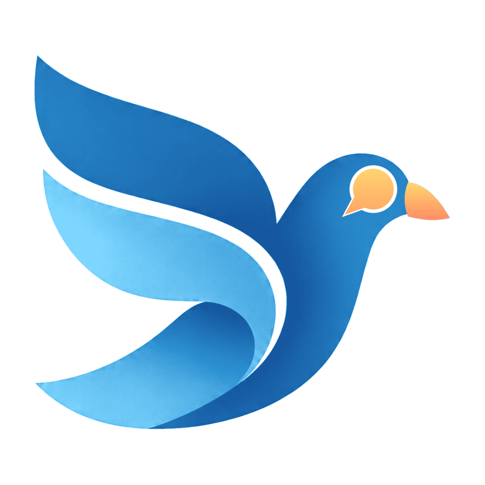
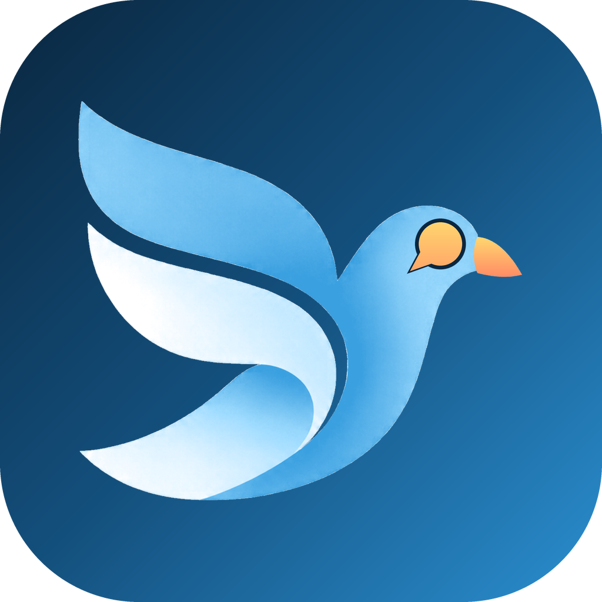

Your existing bird, with the scroll removed and recoloured in the app's colours. The eye is now a round chat bubble, and the beak is in the app's warm gold-to-coral.
The bird in the app's blues. For the website, documents and white backgrounds.

Lighter blues on the app's deep blue gradient, filling the whole icon.
